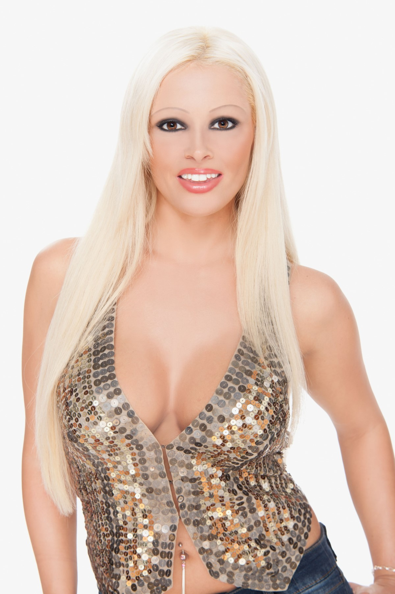
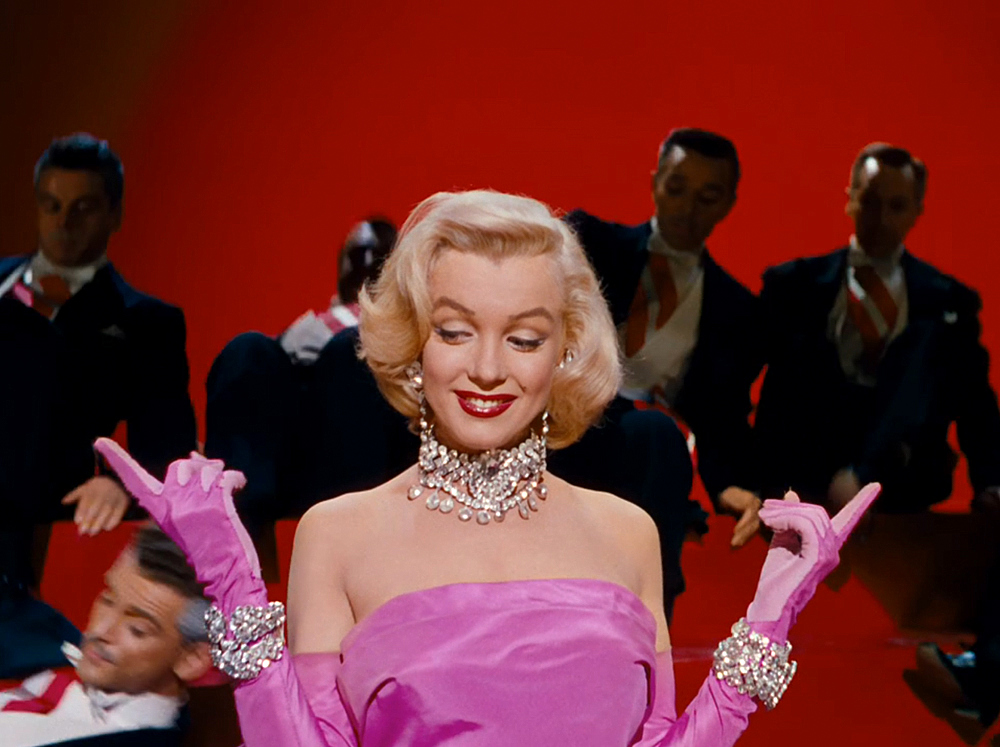
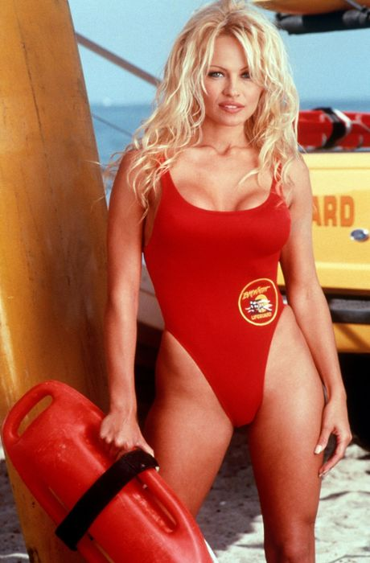
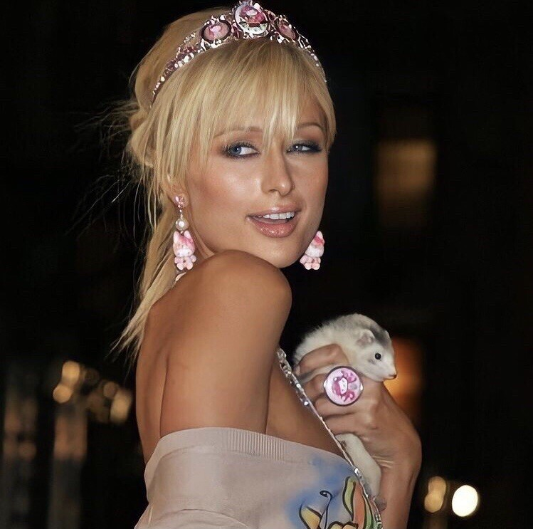
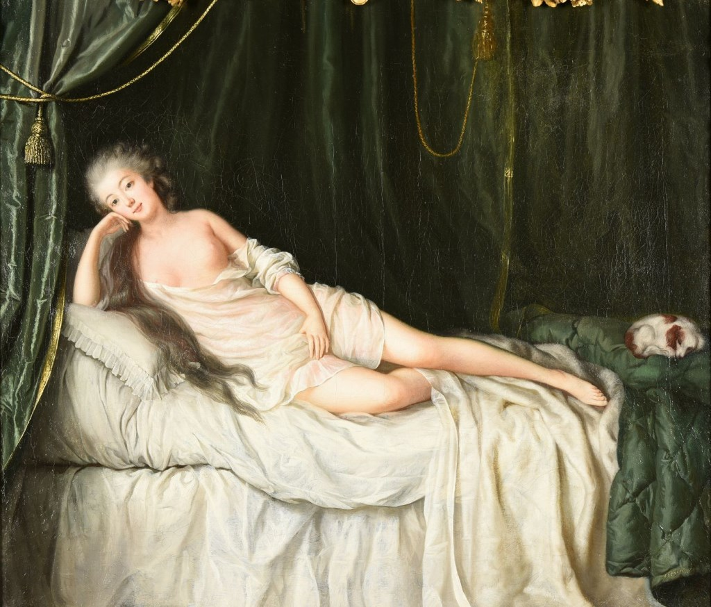

„Aphrodite was the Inspiration behind These powerful blondes, and her influence was to extend down the centuries in a
variety of different but equally compelling guises.“
— On Blondes, Johanna Pitman, (p. 21)
„The men of Greece were bewitched by blond hair. It was exquisite. It represented a piece of fanatsy and wealth.
Above all, it was sexy. Luminous and bright, it shimmered and glowed, producing, in a country of few natural blondes,
a rare and exciting contrast to the mass of Mediterranean dark hair all around.“
— On Blondes, Johanna Pitman, (p. 12)
“She was tall, voluptuous and magnificent, with translucent skin as smooth as the surface of oil, and the graceful,
apple-nakedness of pure pleasure. Her features were soft: exquisite eyes, a pouty, full-blown mouth, and hair so
abundant in its heavenly blondeness that it rippled in silky profusion as it coiled back over her ears into a loosely
knotted chignon. She stood relaxed and easy, leaning slightly forward, a smile playing like a faint blush on her lips.
One hand hovered over her genitals in a gesture of provocative timidity. Of course, connoisseurs, and especially ardent
worshippers, leaned forward to peer behind the hand, thrilling to the irresistible glimpse of what one contemporary
enthusiast described as ‘those parts pressed inwards by either thigh — what an incredibly sweet smile they have’.
Aphrodite to the Greeks, Venus to the Romans, this divine figure, the life-size statue known as the Aphrodite of Knidos,
was the first universal blonde, the world’s original model of sexual fantasy and power.”
— On Blondes, Johanna Pitman, (p. 9)
“In legends, myths, and fairy tales, it becomes even blonder: water nymphs, nixies, sirens,
and undines are almost without exception portrayed as blonde.”
— Sonya Kraus, Emma Nr. 1 (2012)